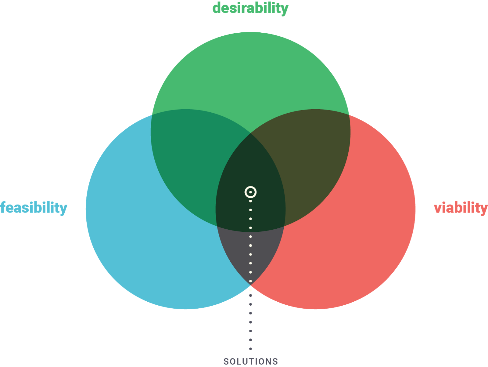

À prova de conceito (POC)
Clique aqui se quiser ver o vídeo sobre esta página. Ele não é obrigatório e não tem nenhuma informação adicional importante. É apenas uma opção disponível para quem prefere vídeos.
A busca de um ponto triplo
Como visto nas aulas anteriores, não há uma maneira única de se resolver um problema ou de se criar uma nova ideia. A busca de soluções passa pelos espaços de inspiração, ideação e implementação.
Inspiração pode ser retratada como o problema ou a oportunidade que motiva os inovadores na busca de novas soluções (Nós já passamos por essa etapa!)
Ideação pode ser retratada como o processo de gerar, desenvolver e testar ideias (Estamos aqui!)
Implementação pode ser retratada como o processo de ir para o mercado (Esperamos que muitos cheguem aqui!)
Toda a busca por material, entrevistas, construção de persona etc. serve para que possamos identificar as restrições e, mais especificamente, descobrir quais delas são as mais importantes e as melhores formas de se avaliar isso.
Essas resrições são melhor estabelecidas a partir da definição de três critérios que, combinados, representam um bom indicativo da qualidade da ideia. Esses critérios, como apontados na figura abaixo são : viabilidade econômica (viability), viabilidade tecnológica (feasibility) e o desejo, mesmo que velado, do usuário (desirability).

De fato, não há a necessidade de se ter um balanço entre esses três critérios, eles apenas precisam coexistir de maneira harmoniosa.
Por esse motivo, buscar apenas uma mudança tecnológica radical sem a visão de mercado pode ser um risco enorme para empresas, ainda mais start-ups.
A grande pergunta é Como podemos verificar se a nossa ideia é um desses pontos triplos?
Por mais complexo que possa parecer, o processo de design não possui uma única resposta. Se trata de um processo abdutivo, que se aproveita de métodos indutivos(divergente) e dedutivos(convergentes) para chegar na melhor solução possível para o problema em determinado estado.
Em outras palavras, precisamos avaliar as infomações que conseguimos em diferentes etapas para pensar em estratégias de validação.
Antes de falar mais sobre estratégias de validação, vamos avaliar o processo de criação de valor para o cliente, também conhecido como customer development process.